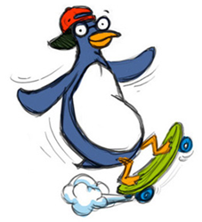

The Content Expert
The Process Modeler
The Tour Guide
The "Feeder Backer"
-
Represents primarily the Recognition Networks
-
Provides relevant context, background information, and enriching information and content for advanced content learners
- Represents primarily the Strategic
- Provides models and hints for scientific inquiry and reading strategies
- Represents primarily the Strategic
- Highlights critical features and provides transitions from one page to the next
- Represents primarily the Affective Networks
- Provides reward and feedback